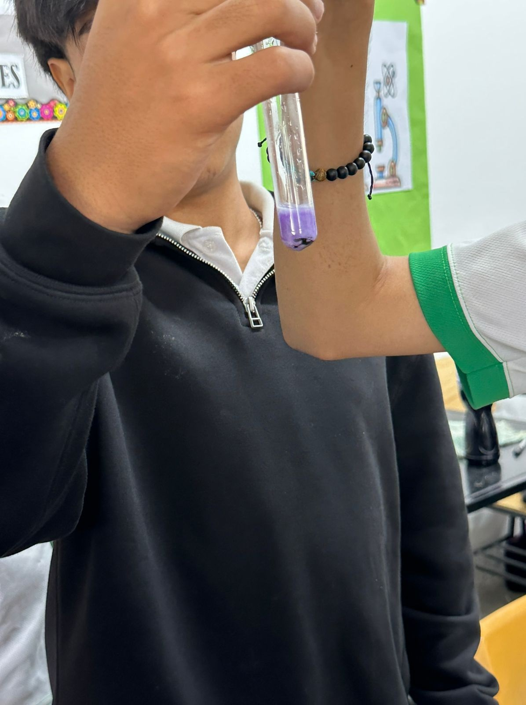
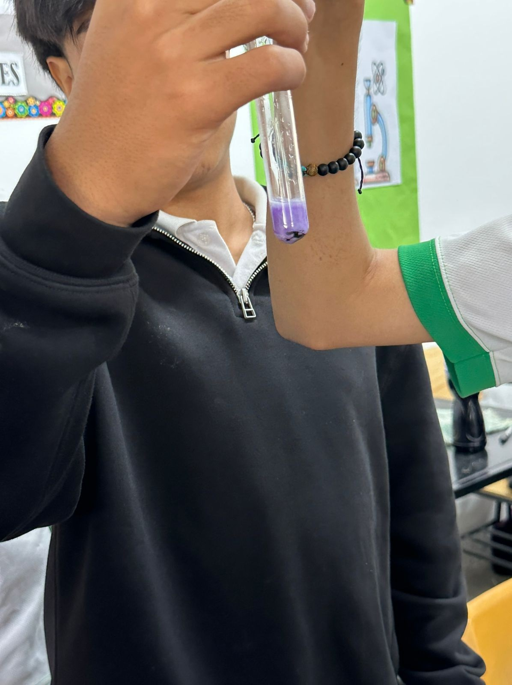

El Roble Academy
Chemistry Lab
By Ana Sophia Flores
|
Start
|
|
introduction and hypothesis
|
materials and procedure
|
Results and conclusions
|
Results and conclusions
Results and conclusions
Results
This experiment helped us better understand the chemical properties of everyday products
and how we can use natural materials to study science in a fun and simple way.
 


Conclusions
In this experiment, we discovered that red cabbage juice can be used as a natural pH indicator to test whether
a substance is acidic, neutral, or basic. By adding different household substances to the cabbage juice,
we observed color changes that helped us identify their pH levels. Substances like lemon juice and vinegar
turned the juice red or pink, showing they are acidic. Soap and baking soda turned it green or blue,
showing they are basic. Some substances, like water or milk, kept the juice purple, meaning they are neutral.